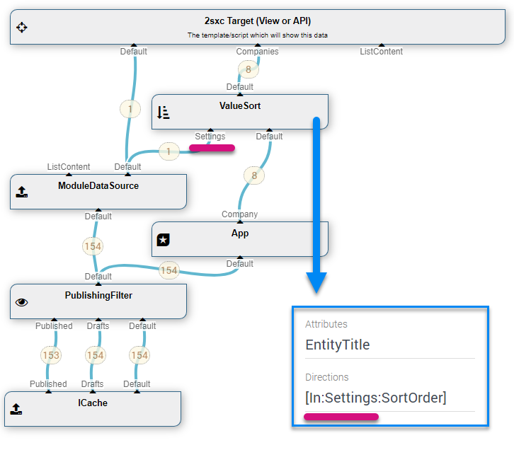

Class CmsBlock
- Namespace
- ToSic.Sxc.DataSources
- Assembly
- ToSic.Sxc.dll
This data-source delivers the core data for a CMS Block.
It will look up the configuration in the CMS (like the Module-Settings in DNN) to determine what data is needed for the block.
Usually it will then find a reference to a ContentBlock, from which it determines what content-items are assigned.
It could also find that the template specifies a query, in which case it would retrieve that.
Was previously called ModuleDataSource
CmsBlock DataSource (Module-Data)
The CmsBlock DataSource DataSource is part of the Standard 2sxc/Dnn Data Sources. It is the default data source as it directly delivers module-instance data and is used for all scenarios which don't explicitly have a query, and it can also be used as part of a query.
How to use with the VisualQuery
When using the VisualQuery it is already in the default / initial query:
The above example shows:
- all data start in the cache ICache
- it is then by default passed through the PublishingFilter
- then it enters this Instance/Module, which gets the current ModuleInstance and passes on the data which has been assigned to it
Using Module/Instance Data For Configuration
Things get really exciting when you use values which the user edited in the module as a setting in your query. Here's an example:
As you can see, the Default out of the CmsBlock is passed into the ValueSort data source with the stream-name Settings and is then used in a token to configure bbehavior of the sort.
Manually Assigning a Module ID (2sxc 9.9)
In 2sxc 9.9 we added the configuration dialog, so you can specify what module the data should come from. This allows you to have configuration-modules or primary-data-modules, which are re-used in queries:

Programming With The CmsBlock DataSource
We recommend to use the VisualQuery where possible, as it's easier to understand and is identical for C# and JavaScript. It's also better because it separates data-retrieval from visualization.
The only property you need to set is InstanceId (2sxc 9.9+) if you want to provide a different module-id.
Read also
Demo App and further links
You should find some examples in this demo App
History
- Introduced in EAV 4.x, 2sxc ?
- Added ability to configure in in the visual-query (2sxc 9.9)
API Documentation
[PublicApi]
[VisualQuery(NiceName = "CMS Block", UiHint = "Data for this CMS Block (instance/module)", Icon = "recent_actors", Type = DataSourceType.Source, NameId = "ToSic.Sxc.DataSources.CmsBlock, ToSic.Sxc", ConfigurationType = "7c2b2bc2-68c6-4bc3-ba18-6e6b5176ba02", In = new string[] { "Default" }, HelpLink = "https://docs.2sxc.org/api/dot-net/ToSic.Sxc.DataSources.CmsBlock.html", NameIds = new string[] { "ToSic.SexyContent.DataSources.ModuleDataSource, ToSic.SexyContent" })]
public sealed class CmsBlock : DataSourceBase, IDataSource, IAppIdentity, IZoneIdentity, IAppIdentityLight, ICacheKey, ICacheExpiring, ITimestamped, IHasLog, IDataSourceLinkable- Inheritance
-
objectServiceBaseCmsBlock
- Implements
- Inherited Members
Constructors
CmsBlock(MyServices)
public CmsBlock(CmsBlock.MyServices services)Parameters
servicesCmsBlock.MyServices
Properties
Link
A link - or possibly many. In most cases, this references the parent object which provides this/these links.
public override IDataSourceLink Link { get; }Property Value
ModuleId
The instance-id of the CmsBlock (2sxc instance, DNN ModId).
It's named Instance-Id to be more neutral as we're opening it to other platforms
[Configuration(Field = "InstanceId", Fallback = "[module:Id]")]
public int? ModuleId { get; set; }Property Value
- int?
OverrideView
This allows external settings to override the view given by the configuration. This is used to temporarily use an alternate view. For example, when previewing a different template.
public IView OverrideView { get; set; }Property Value
- IView